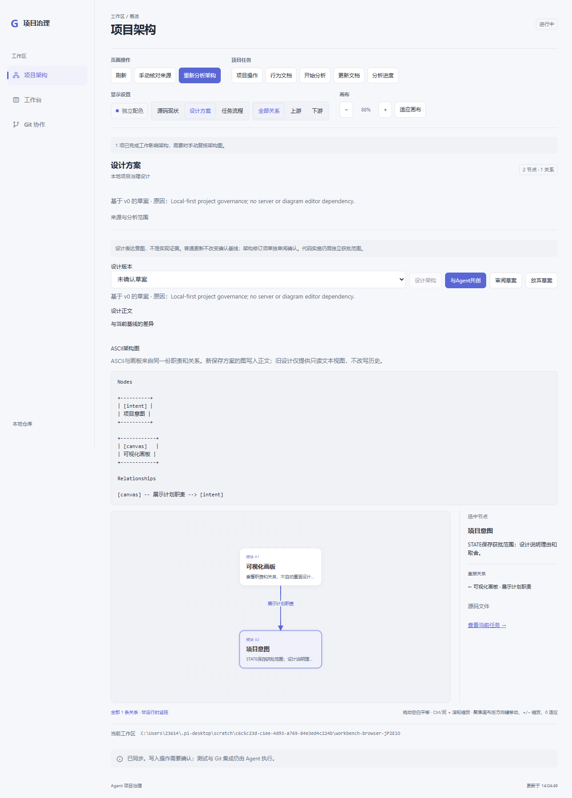

同一份节点/关系生成ASCII方框、方向箭头和画板。新保存方案正文包含受管ASCII区块，重复保存不重复追加；旧基线只提供对应只读视图，不改文件/指纹。图不会替代源码事实，架构仍然可选，三栏和权限不变。
实际检查：干净npm ci、类型/构建及125项测试通过；固定隔离浏览器88截图、七行为十场景通过，i18n0失败/2既有提示。方框/箭头、历史切换、中文/特殊文字、超限/损坏、重复保存、跨项目保护已检查。使用真实临时后端，宿主事件/模型与审阅记录为夹具；不代表真实宿主安装或实际模型共创质量。
